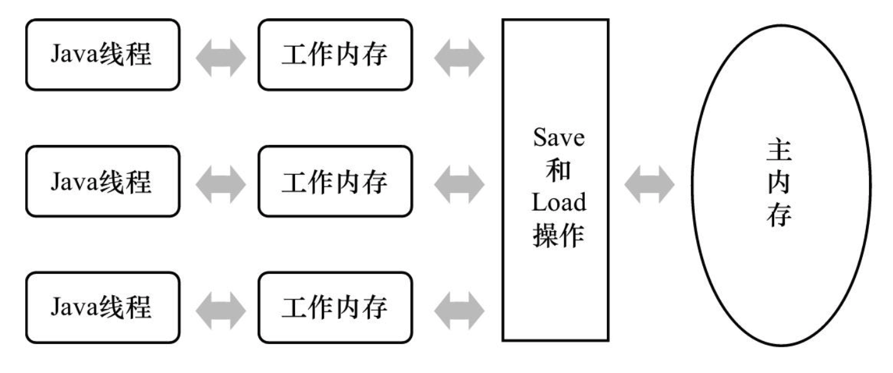
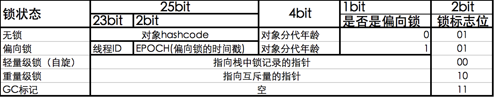
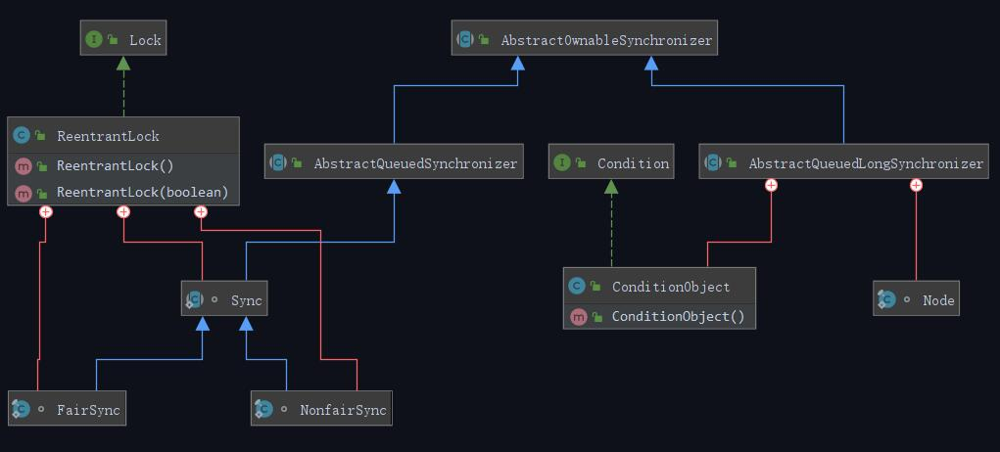

现如今程序大多运行在核多线程的硬件环境下，为了保证资源的读写安全，于是出现了各种各样的锁，那么锁是什么？为什么要有锁？有哪些锁？不同锁的实现原理、优缺点、适用场景是什么？有哪些使用案例？
本文主要介绍Java中的锁，涉及到下面几种分类：
- 乐观锁/悲观锁；
- 共享锁/互斥锁；
- 读锁/写锁；
- 轻量级锁/重量级锁；
- 偏向锁/可重入锁；
- 非公平锁/公平锁；
日常生活中的锁
日常生活中的锁几乎与私有制同时诞生，目的都是为了保护私有资源的安全性，只能授权后的人才能解锁；
- 比如家里的大门的锁，只有一家人有钥匙才能进入；当然特殊情况，比如钥匙都丢了，可以找师傅开锁（
锁中断）； - 比如公共卫生间，大门外部无锁，内部隔间有锁（
读写锁）；
硬件中的锁
在硬件层面，CPU提供了基本的原子操作，以及内存总线锁、缓存锁定等机制来保证复杂内存操作的原子性；
CPU自动保证基本内存操作的原子性
- CPU保证从系统内存当中
读取或者写入一个字节是原子的，意思是当一个处理器读取一个字节时，其他处理器不能访问这个字节的内存地址； - 复杂的内存操作处理器不能自动保证其原子性，比如跨总线宽度，跨多个缓存行，跨页表的访问，于是处理器提供
总线锁定和缓存锁定两个机制来保证复杂内存操作的原子性。
- CPU保证从系统内存当中
使用
总线锁保证原子性- 如果
多个处理器同时对共享变量进行读改写操作，那么共享变量就会被多个处理器同时进行操作，这样读改写操作就不是原子的，由于读和写的时间差，操作完之后共享变量的值会和期望的不一致； - 那么想要保证读改写共享变量的操作是原子的，就必须保证CPU1读改写共享变量的时候，CPU2不能操作缓存了该共享变量内存地址的缓存；
- 处理器使用总线锁就是来解决这个问题的。所谓总线锁就是使用处理器提供的一个
LOCK＃信号，当一个处理器在总线上输出此信号时，其他处理器的请求将被阻塞住,那么该处理器可以独占使用共享内存。
- 如果
使用
缓存锁定保证原子性- 在同一时刻我们只需保证对某个内存地址的操作是原子性即可，但总线锁定把CPU和内存之间通信锁住了，这使得锁定期间，其他处理器不能操作其他内存地址的数据，所以总线锁定的开销比较大，最近的处理器在某些场合下
使用缓存锁定代替总线锁定来进行优化。 - 频繁使用的内存会缓存在处理器的L1，L2和L3高速缓存里，那么原子操作就可以直接在处理器内部缓存中进行，并不需要声明总线锁；
- 所谓
缓存锁定就是如果缓存在处理器缓存行中内存区域在LOCK操作期间被锁定，当它执行锁操作回写内存时，处理器不在总线上声言LOCK＃信号，而是修改内部的内存地址，并允许它的缓存一致性机制来保证操作的原子性，因为缓存一致性机制会阻止同时修改被两个以上处理器缓存的内存区域数据，当其他处理器回写已被锁定的缓存行的数据时会起缓存行无效， - 但有两种情况下处理器不会使用缓存锁定。
- 1)当操作的数据不能被缓存在处理器内部，或操作的数据跨多个缓存行（cache line），则处理器会调用总线锁定。
- 2)有些处理器不支持缓存锁定。对于Inter486和奔腾处理器,就算锁定的内存区域在处理器的缓存行中也会调用总线锁定。
- 在同一时刻我们只需保证对某个内存地址的操作是原子性即可，但总线锁定把CPU和内存之间通信锁住了，这使得锁定期间，其他处理器不能操作其他内存地址的数据，所以总线锁定的开销比较大，最近的处理器在某些场合下
操作系统中的锁
操作系统内核像多进程多线程编程一样也需要一些同步机制来同步各执行单元对共享数据的访问。
尤其是在多处理器系统上，更需要一些同步机制来同步不同处理器上的执行单元对共享数据的访问。
基于CPU硬件原子性的机制，在主流的Linux内核中包含了几乎所有现代的操作系统具有的同步机制，
这些同步机制包括：
- 原子操作
- 信号量（semaphore）
- 读写信号量（rw_semaphore）
- 自旋锁（spinlock）
- 大内核锁(BKL，Big Kernel Lock)
- 读写锁（rwlock）
- 大读者锁（brlock），只包含在2.4内核中
- RCU，Read-Copy Update，在开发内核2.5.43中引入该技术的并正式包含在2.6内核中
- 顺序锁seqlock（只包含在2.6以后内核中）。
Java中的锁
在说Java的锁之前，得先说Java内存模型JMM，JMM的规定导致需要通过各种锁来实现同步，保证多线程环境下变量操作的安全性（原子性，可见性，有序性）；
Java内存模型
Java虚拟机规范中试图定义一种Java内存模型（Java Memory Model,JMM）来屏蔽掉各种硬件和操作系统的内存访问差异，以实现让Java程序在各种平台下都能达到一致的内存访问效果。
在此之前，主流程序语言（如C/C++等）直接使用物理硬件和操作系统的内存模型，因此，会由于不同平台上内存模型的差异，有可能导致程序在一套平台上并发完全正常，而在另外一套平台上并发访问却经常出错，因此在某些场景就必须针对不同的平台来编写程序。
- Java内存模型规定了所有的变量都存储在
主内存（Main Memory）中,每条线程还有自己的工作内存（Working Memory）; - 线程的工作内存中保存了被该线程使用到的变量的主内存副本拷贝，线程对变量的所有操作（读取、赋值等）都必须在工作内存中进行，而不能直接读写主内存中的变量。
- 不同的线程之间也无法直接访问对方工作内存中的变量，线程间变量值的传递均需要通过主内存来完成;
线程、主内存、工作内存三者的交互关系

Java的多线程之间是通过共享内存进行通信的，而由于采用共享内存进行通信，在通信过程中会存在一系列如可见性、原子性、顺序性等问题，而JMM就是围绕着多线程通信以及与其相关的一系列特性而建立的模型。
JMM定义了一些语法集，这些语法集映射到Java语言中就是volatile、synchronized等关键字。
JMM的实现与CPU、CPU高速缓存、主内存之间的交互是类似的，因此也要参考操作系统一样实现自己的同步机制，而且Java为了要实现
WORA，需要跨平台去针对不同的操作系统做适配；
sychronized关键字
关键词：互斥锁、CAS、偏向锁、自旋锁、轻量级锁、重量级锁
实现原理
在java语言中存在两种内建的synchronized语法：
synchronized语句:当Java源代码被javac编译成bytecode的时候，会在同步块的入口位置和退出位置分别插入monitorenter和monitorexit字节码指令。synchronized方法:会被翻译成普通的方法调用和返回指令如:invokevirtual、areturn指令，在VM字节码层面并没有任何特别的指令来实现被synchronized修饰的方法，而是在Class文件的方法表中将该方法的access_flags字段中的synchronized标志位置1，表示该方法是同步方法，并使用调用该方法的对象或该方法所属的Class在JVM的内部对象表示Klass做为锁对象。
那么monitorenter和monitorexit以及access_flags底层又是通过什么底层技术来实现的原子操作呢？
- 在JVM中monitorenter和monitorexit字节码依赖于底层的操作系统的
Mutex Lock来实现的，但是由于使用Mutex Lock需要将当前线程挂起并从用户态切换到内核态来执行，这种切换的代价是非常昂贵的； - 在linux的内核中互斥锁是通过
spinlock自旋锁实现的； 而spinlock是依靠cpu硬件的锁机制（内存总线锁/缓存锁）实现的原子操作；
1
2
3
4
5
6
7
8
9
10
11
12
13
14
15
16
17
18
19
20/* /linux/include/linux/mutex.h */
struct mutex {
/* 1: unlocked, 0: locked, negative: locked, possible waiters */
//指示互斥锁的状态,1没有上锁，可以获得，0/负数 被锁定，默认为1
atomic_t count;
//等待获取互斥锁中使用的自旋锁。在获取互斥锁的过程中，操作会在自旋锁的保护中进行。初始化为为锁定。
spinlock_t wait_lock;
//等待互斥锁的进程队列
struct list_head wait_list;
struct thread_info *owner;
const char *name;
void *magic;
struct lockdep_map dep_map;
};synchronized有三种方式来加锁
| 对比 | 加锁类型 | 获取锁位置 | 示例 |
|---|---|---|---|
| 修饰实例方法 | 对象锁 | 进入同步代码前要获得当前实例的锁 | synchronized (this) {}synchronized void access(){} |
| 修饰静态方法 | 类锁 | 进入同步代码前要获得类锁修饰代码块 | synchronized static void access(){} |
| 修饰代码块 | 类锁 | 进入同步代码块前 | synchronized (TestLock.class){} |
在JDK1.5之前，多线程并发中，synchronized一直都是重量级锁，在JDK1.6之后，这个关键字被做了很多的优化，从而让以往的重量级锁变得不再那么重。
为了减少获得锁和释放锁带来的性能开销，引入了偏向锁、轻量级锁的概念。
因此在synchronized中，锁存在4种状态，分别是:无锁、偏向锁、轻量级锁、重量级锁; 锁的状态根据竞争激烈的程度从低到高不断升级。
对象头
- 对象头（Object Header）的对象运行时数据（Mark Word）中存储了对象的锁状态信息，栈帧中存储了Mark Word的副本称之为
Lock Record； - MarkWord记录了对象和锁有关的信息，当对象被synchronized加同步锁时，那么围绕这个锁的一系列操作都和MarkWord有关系。MarkWord 在32位虚拟机的长度是32bit、在64位虚拟机的长度是64bit。 MarkWord里面存储的数据会随着锁标志位的变化而变化；

synchronized中4种锁状态对应的的Mark Word内容
| 锁状态 | 存储内容 | 存储内容 |
|---|---|---|
| 无锁 | 对象的hashCode、对象分代年龄、是否是偏向锁（0） | 01 |
| 偏向锁 | 偏向线程ID、偏向时间戳、对象分代年龄、是否是偏向锁（1） | 01 |
| 轻量级锁 | 指向栈中锁记录的指针 | 00 |
| 重量级锁 | 指向互斥量（重量级锁）的指针 | 10 |
sychronized锁的升级过程
无锁
- sychronized修饰的代码块/类/方法默认是无锁状态；
- 无锁没有对资源进行锁定，所有的线程都能访问并修改同一个资源，但同时只有一个线程能修改成功。
- 无锁的特点就是修改操作在循环内进行，线程会不断的尝试修改共享资源。如果没有冲突就修改成功并退出，否则就会继续循环尝试。如果有多个线程修改同一个值，必定会有一个线程能修改成功，而其他修改失败的线程会不断重试直到修改成功。
CAS原理及应用即是无锁的实现。无锁无法全面代替有锁，但无锁在某些场合下的性能是非常高的。
偏向锁
- 偏向锁是指一段同步代码一直被一个线程所访问，那么该线程会自动获取锁，降低获取锁的代价。
当1个线程执行到同步代码时，会执行一次CAS操作（比较MarkWord和LockRecord）来尝试获取锁，获取成功时会把ThreadId写入MarkWord。后续这个线程进入和退出这段加了同步锁的代码块时，
不需要再次加锁和释放锁,而是直接比较对象头里面是否存储了指向当前线程的偏向锁。如果相等表示偏向锁是偏向于当前线程的，就不需要再尝试获得锁了。
引入偏向锁是为了在无多线程竞争的情况下尽量
减少不必要的轻量级锁执行路径，因为轻量级锁的获取及释放依赖多次CAS原子指令，而偏向锁只需要在置换ThreadId的时候依赖一次CAS原子指令即可。偏向锁只有遇到其他线程尝试竞争偏向锁时，持有偏向锁的线程才会释放锁，线程不会主动释放偏向锁。
- 偏向锁的撤销，需要等待
SafePoint（在这个时间点上没有字节码正在执行），它会首先暂停拥有偏向锁的线程，判断锁对象是否处于被锁定状态。撤销偏向锁后恢复到无锁（标志位为01）或轻量级锁（标志位为00）的状态。 - 在大多数情况下，锁总是由同一线程多次获得，不存在多线程竞争，所以出现了偏向锁。其目标就是在只有一个线程执行同步代码块时能够提高性能。
- 但一般的互联网后端服务都会存在
2个以上的线程竞争，那么如果开启偏向锁，反而会加剧了获取锁的资源消耗; - 偏向锁在JDK 6及以后的JVM里是默认启用的。可以通过JVM参数关闭偏向锁：
-XX:-UseBiasedLocking=false：设置关闭偏向锁,关闭之后程序默认会进入轻量级锁状态；-XX:BiasedLockingStartupDelay=0：设置偏向锁的启动延迟为0（这个值默认为5秒）；
轻量级锁
第2个线程获取锁时，CAS自旋等锁，升级为轻量级锁;
自旋锁
轻量级锁在加锁过程中，用到了自旋锁，所谓自旋：当有另外一个线程来竞争锁时，争抢线程会在原地循环等待，而不是把该线程给阻塞，直到那个获得锁的线程释放锁之后，争抢线程就可以马上获得锁的。
注意
- 锁在原地循环的时候，是会消耗cpu的。 所以，轻量级锁适用于那些同步代码块执行的很快的场景。
- 自旋锁的使用，其实也是有一定的概率背景，在
大部分同步代码块执行的时间都是很短的。所以通过看似无意义的循环反而能提升锁的性能。 但是自旋必须要有一定的条件控制，
自旋锁的jvm控制参数
-XX:PreBlockSpin=10：jdk1.6，默认启用，默认情况下自旋的次数是 10 次。
自适应自旋锁
在 JDK1.6 之后，引入了自适应自旋锁，自适应意味着自旋的次数不是固定不变的，而是根据以下2个数据来决定：
- 同一个锁上一次自旋的时间
- 拥有锁线程的状态
自适应自旋锁是为了
最大的提高CPU的资源利用率。
eg：如果在同一个锁对象上，刚刚自旋等待成功获得过锁，并且持有锁的线程正在运行中，那么虚拟机就会认为这次自旋也是很有可能再次成功，进而它将允许自旋等待持续相对更长的时间。
如果对于某个锁，自旋很少成功获得过，那在以后尝试获取这个锁时将可能省略掉自旋过程，直接阻塞线程，避免浪费处理器资源。
轻量级锁的锁释放逻辑其实就是获得锁的逆向逻辑，通过 CAS 操作把线程栈帧中的 LockRecord 替换回到锁对象的 MarkWord 中，如果成功表示没有竞争。如果失败，表示当前锁存在竞争(3个线程)，那么轻量级锁就会膨胀成为重量级锁。
重量级锁
升级为重量级锁时，锁标志的状态值变为“10”，此时Mark Word中存储的是指向重量级锁的指针，此时等待锁的线程都会进入阻塞状态。
sychronized总结
- 默认无锁，执行一次CAS抢锁；
- 偏向锁通过对比Mark Word解决加锁问题，避免执行CAS操作。
- 轻量级锁是通过用
CAS操作和自旋来解决加锁问题，避免线程阻塞和唤醒而影响性能。- 重量级锁是将除了拥有锁的线程以外的线程都
阻塞。
优缺点
主要与ReentrantLock比较
优点
- 默认为非公平是锁，性能好；
- 关键词形式使用简单，不需要手动释放锁；
- 支持可重入；
缺点
- 不支持公平锁；
- 当多个线程尝试获取锁时，未获取到锁的线程不能外部中断，造成性能消耗；
- 在资源竞争不是很激烈的情况下，Synchronized的性能要优于ReentrantLock，但是在资源竞争很激烈的情况下，Synchronized的性能会下降几十倍，但是ReentrantLock的性能能维持常态；
适用场景
sychronized是悲观锁，悲观锁适合写操作多的场景，先加锁可以保证写操作时数据正确。
使用案例
- HashTable,Vector都是直接使用sychronized关键词实现线程安全；
volatile关键字
volatile是Java虚拟机提供的轻量级同步机制；
实现原理
保证可见性
volatile的可见性可以理解为一种通知机制，一个线程修改工作内存并同步到主内存后，同时确保其他线程的工作内存也修改完成；
volatile实现内存可见性是通过store和load指令完成的；- volatile变量进行写操作时：在写操作后加入一条store命令， 将工作内存中的共享变量值刷回到主内存；
- volatile变量进行读操作时：在读操作前加入一条load命令， 从主内存中读取共享变量；
不保证原子性
volatile不保证原子性和JMM的实现原理有关。在多线程运行环境下，因为存在线程切换，如果volatile变量不上锁，变量的工作内存和主内存的值是不能保证是一致的，
可能在当前线程执行store操作的时候，别的线程已经执行过load&store了，那么这个时候就会发生值值覆盖（线程不安全）；禁止指令重排
内存屏障（Memory Barrier），一种CPU指令；
通过插入内存屏障禁止在内存屏障的前后执行指令重排优化，保证特定操作的执行顺序，保证某些变量的内存可见性；
优缺点
优点
- 轻量级锁，损耗低
- 保证可见性和有序性
缺点
- volatile只能作用于变量层次，无法作用语句层次（加锁等确保）
- 不能保证原子性（线程安全）
- 频繁更改、改变或写入volatile字段有可能导致性能为题。（volatile字段未修改时，读取没有性能问题的）
适用场景
- volatile不能修饰
写入操作依赖当前值的变量。声明为volatile的简单变量如果当前值与该变量以前的值相关，那么volatile关键字不起作用，也就是说如下的表达式都不是原子操作：“count++”、“count = count+1”; - 状态标识：volatile适合幂等操作，比如设置状态，不管别的线程设置为多少，以当前线程设置的值为准，覆盖不影响业务逻辑;
- 一次性安全发布：在缺乏同步的情况下，可能会遇到某个对象引用的更新值（由另一个线程写入）和该对象状态的旧值同时存在。这就是造成著名的
双重检查锁定（double-checked-locking）问题的根源，其中对象引用在没有同步的情况下进行读操作，产生的问题是可能会看到一个更新的引用，但是仍然会通过该引用看到不完全构造的对象。
Lazy单例模式的DCL实现
2
3
4
5
6
7
8
9
10
11
12
13
14
15
16
17
18
19
//volatile标识可见性
private static volatile VolatileTest instance = null;
//DLC双重检查加锁实现
public static VolatileTest getInstance() {
//其他线程可能更改instance
if (instance == null) {
synchronized (VolatileTest.class) {
//其他线程可能在上锁前更改instance
if (instance == null) {
instance = new VolatileTest();
//此时如果instance没有设置volatile保证有序性，其他线程可能读取到一个部分构造的对象
}
}
}
return instance;
}
}DLC代码过于复杂，可以采用延迟初始化占位（Holder）类模式实现
final class InstanceHolder解决单例初始化问题更优，且不需要同步锁的损耗；
2
3
4
5
6
7
8
9
10
11
12
13
14
15
private VolatileTest() {
}
//延迟初始化实现:内部静态类只有在调用时才会加载
private static final class InstanceHolder {
private InstanceHolder() {
}
//JVM在类的初始化阶段给出的线程安全性保证
static final VolatileTest instance = new VolatileTest();
}
//公有实例化方法
public static VolatileTest getInstance() {
return InstanceHolder.instance;
}
}
使用案例
- volatile可配合Unsafe类实现CAS后保证当前工作内存的变量的实时性;
- ConcurrentHashMap中通过
volatile来保证hash表数据的可见性：transient volatile Node<K,V>[] table；
ReentranLock可重入锁
关键词：互斥锁、可重入锁、公平锁/非公平锁
ReentrantLock意思为可重入锁，指的是一个线程能够对一个临界资源重复加锁。
实现原理

ReentrantLock基于AQS中的互斥锁实现;
Java中的大部分同步类（Lock、Semaphore、ReentrantLock等）都是基于AbstractQueuedSynchronizer（简称为AQS）实现的。
AQS是一种提供了原子式管理同步状态、阻塞和唤醒线程功能以及队列模型的简单框架。todo 后面另起章节解说juc.locks源码
优缺点
优点
- ReentrantLock支持可重入；
- ReentrantLock支持指定时间中断/外部中断；
- ReentrantLock支持非公平/公平锁（构造函数）；
- ReentrantLock支持线程的精确唤醒（Condtion）；
- ReentrantLock支持查看锁的状态，锁是否被锁上了；
- ReentrantLock支持查看当前有多少线程在等待锁；
缺点
- ReentrantLock语法比sychronized繁琐，相比synchronized可以减少嵌套；
- ReentrantLock使用比sychronized繁琐，不能像sychronized可以直接修饰方法来加锁；
- ReentrantLock需要手动释放锁；
适用场景
在需要时间锁等候、可中断锁等候、无块结构锁、多个条件变量或者轮询锁时，采用ReentrantLock ；
在资源竞争非常激烈的情况下，synchronized的性能一下子能下降好几十倍，而ReentrantLock确还能维持常态；在资源竞争不是很激烈的情况下，偶尔会有同步的情形下，synchronized是很合适的，因为在资源竞争不激烈的情形下，ReentrantLock性能稍微比synchronized差点点；
ReentrantLock 具有可伸缩性的好处，应当在高度竞争的情况下使用它，但是大多数 synchronized 块几乎从来没有出现过争用，所以可以把高度争用放在一边。
建议首先考虑 synchronized ，直到确实证明 synchronized 不合适再考虑ReentrantLock。
使用案例
ArrayBlockingQueue中用ReentrantLock来控制队列的读写安全，有1把锁（可设置是否公平），notEmpty，notFull2个Condition来实现队列put和take的阻塞；LinkedBlockingQueue中用ReentrantLock来控制队列的读写安全，有takeLock，putLock2把锁，notEmpty，notFull2个Condition来实现队列put和take的阻塞；CopyOnWriteArrayList利于ReentrantLock来包含数组的更新操作；
ReentranReadWriteLock可重入读写锁
ReentranReadWriteLock提供了readLock和writeLock两种锁的操作机制，一个资源可以被多个线程同时读，或者被一个线程写，但是不能同时存在读和写线程。
读锁可以共享，多个线程可以同时拥有读锁，类似于MySQL的共享锁（S锁）；
写锁却只能只有一个线程拥有，而且获取写锁的时候，其他线程都已经释放了读锁，而且在该线程获取写锁之后，其他线程不能再获取读锁，类似于MySQL的互斥锁（X锁）。
实现原理
实现原理与ReentrantLock一样，都是基于AQS实现；
todo 后续补充源码解析
注意点
读锁离开了写锁就没有了意义：如果有一线程在读取数据时，此时恰好有另一线程，正以写锁的方式在修改该数据，此时读取数据的线程如果加了读锁，将被阻塞，直到另一线程的写锁被释放才能继续读，而如果读取数据的线程未加读锁，那么它的读将不被阻塞，就有可能读入被修改前的数据；重入：此锁允许 reader 和 writer 按照 ReentrantLock的方式重新获取读取锁或写入锁。在写入线程保持的所有写入锁都已经释放后，才允许重入 reader 使用它们。此外，writer 可以获取读取锁，但反过来则不成立；锁降级：重入还允许从写锁降级为读锁，其实现方式是：先获取写锁，然后获取读锁，最后释放写锁。但从读锁升级到写锁是不可能的；
优缺点
优点
- 在某些读远远大于写的场景中，读写锁能够提供比排它锁
更好的并发量和吞吐量：与之前的互斥锁（同一时刻只允许一个线程进行访问）相比，读写锁维护了一对锁，一个读锁，一个写锁。读写锁在同一时刻允许多个线程进行读操作，但是写线程访问过程中，所有的读线程和其他写线程均被阻塞。如此，并发性有了很大的提升。 - 公平性选择：支持非公平性（默认）和公平的锁获取方式，吞吐量还是非公平优于公平；
- 重入性：支持重入，读锁获取后能再次获取，写锁获取之后能够再次获取写锁，同时也能够获取读锁；
- 锁降级：遵循获取写锁，获取读锁再释放写锁的次序，写锁能够降级成为读锁；
缺点
同ReentrantLock的缺点
适用场景
- 读多写少的情况下可以使用ReentrantReadWriteLock获得比更高的并发性能；
使用案例
javax.swing.plaf.nimbus.ImageCache使用ReentrantReadWriteLock来控制缓存LinkedHashMap对象的并发访问；